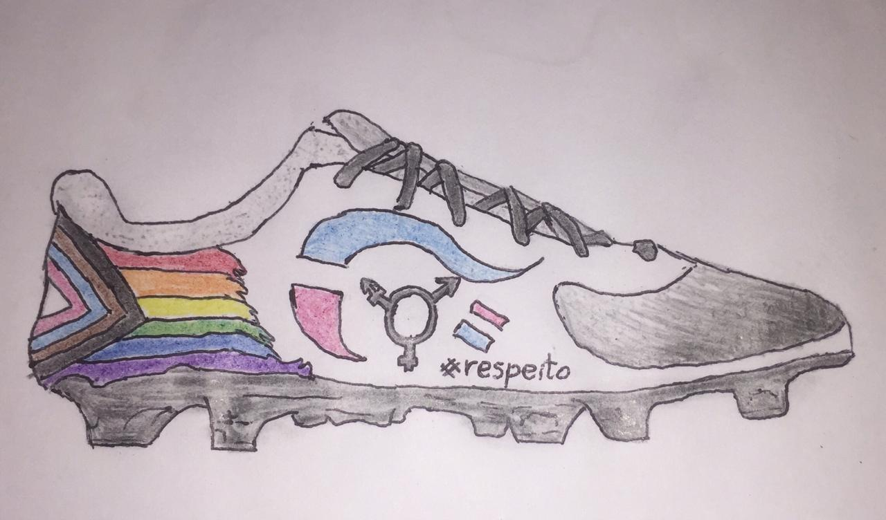

Praticar esportes é bom demais, mas sem respeito, torna-se simplesmente... impraticável. O futebol é um símbolo de destaque do Brasil, mas sua grande proporção nacional não significa a inclusão de todos. E já que este é o país que mais mata e discrimina pessoas trans no mundo, é possível ver essas violências de gênero refletidas no esporte da preferência nacional. Faz pouquíssimo tempo que o futebol feminino alcançou um por cento do reconhecimento que merece, e há inúmeros jogadores de grandes clubes acusados de violência contra mulher que permanecem impunes, só para citar dois exemplos.
Pessoas Trans costumam se sentir excluídas em muitos espaços, principalmente nos esportivos, os quais sempre lhes foram negados, seja direta ou indiretamente através de atitudes desrespeitosas com a identidade de gênero e/ou orientação sexual. Infelizmente, a maioria de nós em algum momento já se sentiu recluso da participação nos esportes. Até mesmo em espaços LGBs, nós Trans sofremos preconceito, devido a cisnormatividade imperante e a muitos(as) gays, lésbicas e bissexuais cisgêneros(as) que reproduzem atitudes transfóbicas.
Cansados de nos unirmos para contar histórias tristes, decidimos nos reunir para movimentar. Queremos fazer muitas coisas, mas escolhemos o futsal para começar a nossa revolução! Queremos mostrar que o esporte é sim um meio de integração e diversidade para todos!
O Reuni-Racha é um espaço acolhedor a pessoas transgêneras, transexuais, travestis e não-binárias que queiram desfrutar de um treino de qualidade, com respeito e amizade. Chega junto e bota esse corpo maravilhoso pra se mexer contra toda forma de preconceito! Dá-lhe de bicuda e marca esse gol na cara da transfobia. A vitória será sempre nossa.